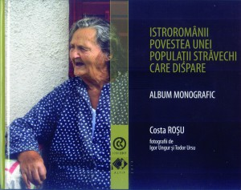

O privire autentică în interiorul comunității istroromânilor
 Recent, la editurile ICRV și ALTIP a apărut o lucrare deosebită și inedită prin conținutul ei: albumul monografic "Istroromânii. Povestea unei populații străvechi care dispare", realizat de Costa Roșu, cu fotografii de Igor Ungur și Todor Ursu.
Lucrarea este rezultatul a șase campanii de documentare în localitățile cu istroromâni din Istria, întreprinse de o echipă de cercetători de la Institutul de Cultură al Românilor din Voivodina (ICRV) în perioada 2009-2013. Cercetările au continuat anul trecut pe urmele vechilor vlahi, pe insulele Krk și Rab, dar și în Munții Velebit. De altfel, în anul 2010, echipa din partea ICRV a continuat investigațiile cu privire la vlahii din Munții Rumija, Muntenegru. Toate campaniile de documentare fac parte din proiectul "Vlahii, respectiv românii de le Litoralul Adriatic" și au rezultat cu trei mii de imagini electronice și fotografii document, dar și lucrări de specialitate.
După cum notează autorii în Argument, se consideră că astăzi în Istria trăiesc mai puțin de 500 de vorbitori de istroromână. Numărul lor este în continuă scădere și poate că reprezentanții Institutului de Cultură al Românilor au prins ultimul moment să ne prezinte mai îndeaproape această comunitate fascinantă prin trecutul ei, tradițiile și dialectul pe care-l vorbește.
Lucrarea pe care o avem în față cuprinde două secțiuni.
În prima parte, cititorului i se oferă un scurt istoric al comunității istroromâne, dar și reportaje despre viața și tradițiile istroromânilor de odinioară și de astăzi (numiți și vlahi, morlaci sau rumeri), scrise de Costa Roșu. Valoarea documentară a acestor consemnări (grupate în unitățile intitlulate Urme ale vlahilor în Munții Velebit, Urme ale vlahilor în insulele din Marea Adriatică, Istroromânii – populație străveche care dispare) este cu atât mai mare cu cât prezintă evoluția în timp a comunității și redau convorbiri cu istroromânii din localitățile cercetate. Așadar, ajungem să cunoaștem mai îndeaproape comunitatea istroromânilor de astăzi și evoluția ei în timp prin oamenii ei și poveștile lor de viață. Datele istorice culese din bibliografia cuprinzătoare se împletesc cu impresii personale și poveștile de viață ale oamenilor locului, apartenenți ai comunității istroromâne și alcătuiesc o lucrare care se înscrie în seria celor de specialitate despre istroromâni.
În partea a doua, fotografiile color înfățișează tezaurul comunității istroromânilor. Albumul cuprinde trei secțiuni: Oameni, Locuri și Urme. Fotografiile care redau întâlniri oficiale ale reprezentanților ICRV și omologii lor din Istria, dar și momente din viața istroromânilor, vetrele lor de ieri și astăzi, oferindu-ne o imagine veritabilă a unei comunități ale căror concepții și datini sunt încă prezente în vecinătatea noastră.
Concluzia care răzbate din consemnări și imagini este pe cât se poate de clară și e formulată astfel: "Istroromânii, au știut dintotdeauna că, o comunitate, indiferent cât de mică sau de mare este, poare rezista tuturor vitregiilor timpului prin cultivarea, păstrarea și promovarea valorilor ce-i definesc identitatea. Limba și tradiția fiind un factor decisiv în acest sens" (p. 84).
Valoarea și importanța lucrării pe care o avem în fața noastră este subliniată și de prefațatorul Nicu Ciobanu: "Albumul monografic prin conținut este și o mică dar relevantă, istorie despre o populație crispată în timp, în cotloanele istoriei, care în vremurile noastre nu mai prezintă un interes major decât pentru cei îndrăgostiți de farmecul decupării unor importante file care aparțin trecutului. Se zice că istroromânii dispar, însă ei sunt acolo, sunt în imaginația noastră – a celui care nu i-a întâlnit și în memoria celor care i-a cunoscut – în cărțile care i-au trecut în nemurire, în așezările lor din piatră șlefuită de Marea Adriatică, dar și în acest Album monografic care ne aduce o poveste umanizată despre istroromâni, depsre vlahii de pe litoralul adriatic, cu elegante picanterii din viața de zi cu zi, care se împletesc cu documente istorice, științifice, prin care brodează călătoria prin timpuri, cu iz de epopee a unui popor, cu toate bunele și relele de care a avut parte. Este o poveste vie în care Costa Roșu s-a implicat cu multă pasiune, chiar cu o ușoare nostalgie și stropi de resemnare a celui care și el însuși fiind parte dintr-o comunitate etnică…" (p. 2-3).
Albumul monografic "Istroromânii. Povestea unei populații străvechi care dispare" este un autentic ghid de călătorie și o privire originală în interiorul comunității istroromânilor – o comunitate numeric restrânsă, dar care va dăinui atâta timp cât se va scrie despre ea.
Marina Ancaițan
August 8, 2014
© 2014 Uniunea Ziariștilor Profesioniști din România